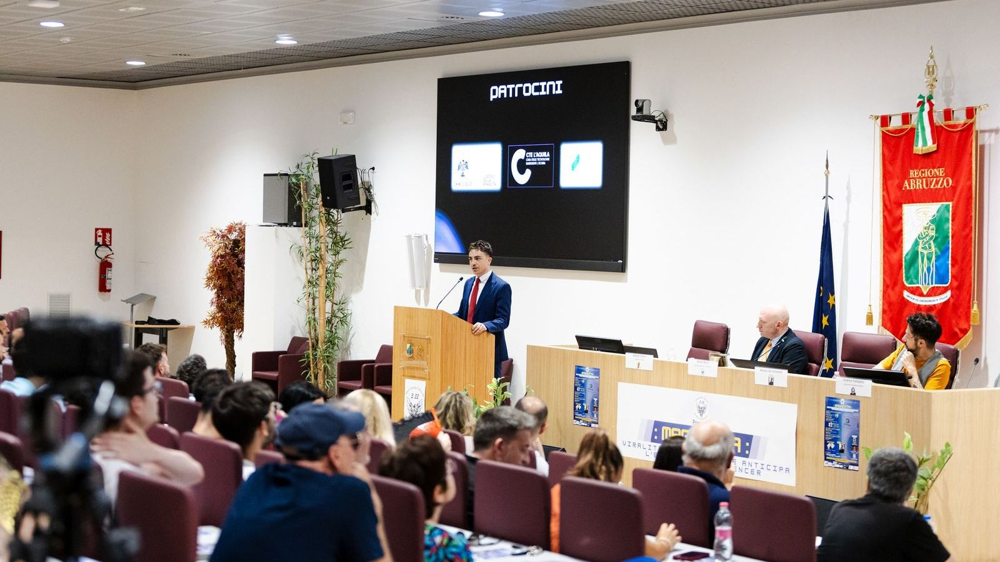

La Sala Ipogea dell’Emiciclo all’Aquila ha ospitato un evento culturale di grande interesse, “Magnotta: viralità spontanea che anticipa l’era degli influencer”. Organizzato dall’Associazione culturale 3:33, con il patrocinio della Casa delle tecnologie emergenti di L’Aquila, del Comune dell’Aquila e del Consiglio Regionale dell’Abruzzo, l’iniziativa si è proposta di analizzare scientificamente le radici di un fenomeno virale nato ben prima dell’avvento del web e dei social media: il celebre “scherzo della lavatrice” rivolto a Mario Magnotta, il bidello aquilano divenuto un’icona della cultura pop italiana.
L’incontro non si è limitato a celebrare il personaggio, ma ha tentato di comprendere i meccanismi che hanno permesso a questa incredibile forma di viralità di nascere, crescere e diffondersi in un’era “analogica”.
I lavori si si sono aperti con i saluti istituzionali del Sindaco dell’Aquila, Pierluigi Biondi, di Federico Fioriti, in rappresentanza della Casa delle tecnologie emergenti, e dell’Assessore alla Cultura della Regione Abruzzo, Roberto Santangelo.
Mirko Rocci, presidente dell’Associazione 3:33 e ideatore dell’evento, guiderà un dibattito che vedrà coinvolti esperti di diverse discipline.
«Oggi portiamo per la prima volta a conoscenza della collettività degli aspetti scientifico-culturali che caratterizzano lo scherzo a Mario Magnotta – spiega Rocci -. Faremo un percorso molto intenso in cui coinvolgeremo influencers attuali con psicologi, psicoterapeuti, data analyst e altre figure, oltre alla presenza di Alessio De Leonardis che ha girato e sta girando in questi giorni il film “Semplice cliente” proprio intitolato a Magnotta. Sulla base di queste analisi che noi effettueremo, tracceremo un profilo del successo dello scherzo e quindi tutte le caratteristiche che hanno portato questo scherzo ad essere così virale nell’era digitale ed analogica».
La moderazione è stata affidata al giornalista e scrittore aquilano Alberto Orsini, volto noto del TGR Abruzzo, che ha condotto la discussione tra gli ospiti e il pubblico.
Tra i relatori, sono intervenuti il data analyst e divulgatore scientifico Andrea Palladino, lo psicologo e scrittore Enrico Chelini, l’influencer Samuel Comandini, noto come Zio Command, e il regista Alessio De Leonardis. Quest’ultimo, autore del documentario in fase di realizzazione “Semplice cliente”, includerà proprio questo evento nel suo lavoro, sottolineando l’importanza del caso Magnotta nel panorama culturale contemporaneo.
Un momento particolarmente atteso è stata la testimonianza diretta degli autori dello scherzo telefonico, Maurizio Videtta e Antonello De Dominicis, che hanno condiviso aneddoti inediti e il loro punto di vista sulla nascita del fenomeno.
«L’idea di questo scherzo è nata negli anni in cui facevo l’Istituto Tecnico Commerciale Luigi Rendina, lui era il mio bidello. L’idea è nata perché lui andava in un negozio a fare un secondo lavoretto per arrotondare lo stipendio – racconta Videtta -. A quel punto, io sono intimo amico del titolare di questo negozio, rivenivamo da un concerto di Michael Jackson a Roma e mi disse che Magnotta lavorava con lui. Dopo un paio di mesi, mi telefona Lello Panarelli e mi dice che bisognava fargli uno scherzo perché si era separato dalla moglie e stava cercando una lavatrice in particolare. Oggi Mario va ricordato perché, anche ora che non c’è più, sta facendo molto per noi che abbiamo bisogno di leggerezza. Quando abbiamo fatto la dialisi, e poi il trapianto, ci è stato molto utile psicologicamente. Nella sala dialisi ho portato Mario Magnotta, e ci ha alleggerito moltissimo questa terapia durissima. Stiamo anche facendo una raccolta fondi per una foresteria insieme all’Astra, a L’Aquila per la vita, con la NTR per sostenere questa casa in cui ospiteremo chiunque voglia venire a L’Aquila per curarsi».
«Noi non ci aspettavamo un successo simile. Ad avere successo è stata la storia del povero uomo vessato da tutti che, ad un certo punto, esasperandosi reagisce in maniera sconnessa – dice De Dominicis -. Mario si prestava molto con il suo rispondere, tanto che sembrava tutto costruito ed invece era reale».
Per la prima volta in pubblico insieme con loro, presente anche Romina Magnotta, figlia di Mario, che ha aggiunto una prospettiva personale e toccante all’evento.
Un evento che non è stato solo un’occasione di approfondimento culturale, ma anche un momento dedicato alla sensibilizzazione sociale. Grazie alla presenza di un gazebo dell’Associazione nazionale trapiantati di rene, l’iniziativa sottolinea il suo impegno solidale. Questa scelta è legata alla dedizione profusa negli anni da uno degli autori dello scherzo, Maurizio Videtta, attuale presidente della sezione aquilana dell’Associazione, dimostrando come anche un fenomeno nato per divertimento possa veicolare messaggi di grande valore civico.
In definitiva, l’appuntamento è stato un evento che ha offerto spunti di riflessione originali e l’occasione di esplorare un pezzo di storia della viralità italiana da una prospettiva inedita. Diversa. Semplice.
https://www.unita.tv/gossip/a-laquila-un-convegno-sul-fenomeno-virale-pre-social-nato-dallo-scherzo-a-mario-magnotta/97494/